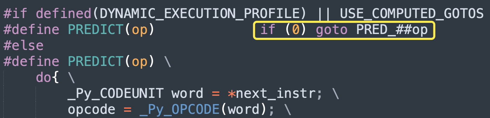

楔子
前面我们分析了虚拟机执行字节码的原理，并且也介绍了不少指令，但这些指令都是从上往下顺序执行的，不涉及任何的跳转。而像流程控制语句，比如 if、for、while、try 等等，它们在执行时会发生跳转，因此 Python 底层一定还存在相应的跳转指令。
那么从现在开始，就来分析一下这些流程控制语句的实现原理，本文先来介绍 if 语句。
if 字节码
if 语句应该是最简单也是最常用的流程控制语句，那么它的字节码是怎么样的呢？当然这里的 if 语句指的是 if elif else 整体，里面的某个条件叫做该 if 语句的分支。
我们看一下 if 语句的字节码长什么样子。
import dis
code_string = """
score = 90
if score >= 85:
print("Good")
elif score >= 60:
print("Normal")
else:
print("Bad")
"""
dis.dis(compile(code_string, "<file>", "exec"))
反编译得到的字节码指令比较多，我们来慢慢分析。另外为了阅读方便，源代码行号就不显示了。
// 加载常量 90 并压入运行时栈
0 LOAD_CONST 0 (90)
// 加载符号表中索引为 0 的符号 "score"，弹出运行时栈的栈顶元素 90
// 然后将两者绑定起来，存放在当前的名字空间中
2 STORE_NAME 0 (score)
// 加载变量 score
4 LOAD_NAME 0 (score)
// 加载常量 85
6 LOAD_CONST 1 (85)
// 进行比较，操作符是 >=，这个指令之前介绍过的
8 COMPARE_OP 5 (>=)
// 如果比较结果为 False，就进行跳转，从名字也能看出指令的含义
// 那么跳转到什么地方呢？指令参数 22 表示跳转到偏移量为 22 的指令
// 很明显，就是当前分支的下一个分支。关于具体是怎么跳转的，一会儿说
10 POP_JUMP_IF_FALSE 22
// 如果走到这里说明没有跳转，当前分支的条件为真，那么开始执行该分支内部的逻辑
// 以下 4 条指令对应 print("Good")
12 LOAD_NAME 1 (print)
14 LOAD_CONST 2 ('Good')
16 CALL_FUNCTION 1
18 POP_TOP
// if 语句只有一个分支会被执行，如果执行了某个分支，那么整个 if 语句就结束了
// 于是向前跳转 26 个偏移量，来到偏移量为 48 的指令
20 JUMP_FORWARD 26 (to 48)
// 对应 score >= 60
>> 22 LOAD_NAME 0 (score)
24 LOAD_CONST 3 (60)
26 COMPARE_OP 5 (>=)
// 如果比较结果为假，跳转到偏移量为 40 的指令
28 POP_JUMP_IF_FALSE 40
// 以下 4 条指令对应 print("Normal")
30 LOAD_NAME 1 (print)
32 LOAD_CONST 4 ('Normal')
34 CALL_FUNCTION 1
36 POP_TOP
// 向前跳转 8 个偏移量，来到偏移量为 48 的指令
38 JUMP_FORWARD 8 (to 48)
// 最后一个是 else 分支，而 else 分支没有判断条件
>> 40 LOAD_NAME 1 (print)
42 LOAD_CONST 5 ('Bad')
44 CALL_FUNCTION 1
46 POP_TOP
// 到这里说明 if 语句结束了，而下面也没有代码了，于是返回
// 每个代码块对应的指令的最后都有一个 return
>> 48 LOAD_CONST 6 (None)
50 RETURN_VALUE
我们看到字节码偏移量之前有几个 >> 这样的符号，显然这是 if 语句中的每一个分支开始的地方。
经过分析，整个 if 语句的字节码指令还是很简单的。就是从上到下依次判断每一个分支，如果某个分支条件成立，就执行该分支的代码，执行完毕后结束整个 if 语句；否则跳转到下一个分支。
显然核心就在于 POP_JUMP_IF_FALSE 指令，我们看一下它的逻辑。
POP_JUMP_IF_FALSE
COMPARE_OP 执行完之后会将比较的结果压入运行时栈，而 POP_JUMP_IF_FALSE 指令则是将结果从栈顶弹出并判断真假。如果为假，那么跳到下一个分支，否则执行此分支的代码。
case TARGET(POP_JUMP_IF_FALSE): {
PREDICTED(POP_JUMP_IF_FALSE);
// 从栈顶弹出比较结果
PyObject *cond = POP();
int err;
// 如果 cond is True，说明当前分支的条件成立，那么执行下一条指令
if (cond == Py_True) {
Py_DECREF(cond);
FAST_DISPATCH();
}
// 如果 cond is False，那么通过 JUMPTO 跳转到 if 语句的下一个分支
// 关于 JUMPTO 一会儿介绍
if (cond == Py_False) {
Py_DECREF(cond);
JUMPTO(oparg);
FAST_DISPATCH();
}
// 到这里说明 cond 不是布尔值，那么调用 PyObject_IsTrue 并判断结果是否为真
// PyObject_IsTrue(cond)：等价于 Python 的 bool(cond) is True
err = PyObject_IsTrue(cond);
Py_DECREF(cond);
// 如果 cond 的布尔值为真，那么返回 1，此时什么也不做
// 最后会调用 DISPATCH()，去执行下一条指令
if (err > 0)
;
// 如果 cond 的布尔值为假，那么返回 0，跳转到下一个 if 分支
else if (err == 0)
JUMPTO(oparg);
else
goto error;
DISPATCH();
}
逻辑不难理解，但是里面出现了判断对象布尔值的函数，我们补充一下。
// Objects/object.c
// 等价于 Python 的 bool(v) is True
int
PyObject_IsTrue(PyObject *v)
{
Py_ssize_t res;
// 如果 v 本身就是布尔值 True，返回 1
if (v == Py_True)
return 1;
// 如果 v 本身就是布尔值 False，返回 0
if (v == Py_False)
return 0;
// 如果 v 是 None，返回 0
if (v == Py_None)
return 0;
// 如果 v 是数值型对象，并且实现了 nb_bool（对应 __bool__）
// 那么调用，如果结果不为 0，返回 1，否则返回 0
else if (v->ob_type->tp_as_number != NULL &&
v->ob_type->tp_as_number->nb_bool != NULL)
res = (*v->ob_type->tp_as_number->nb_bool)(v);
// 如果 v 是映射型对象，并且实现了 mp_length（对应 __len__)
// 那么调用，返回对象的长度
else if (v->ob_type->tp_as_mapping != NULL &&
v->ob_type->tp_as_mapping->mp_length != NULL)
res = (*v->ob_type->tp_as_mapping->mp_length)(v);
// 如果 v 是序列型对象，并且实现了 sq_length（对应 __len__)
// 那么调用，返回对象的长度
else if (v->ob_type->tp_as_sequence != NULL &&
v->ob_type->tp_as_sequence->sq_length != NULL)
res = (*v->ob_type->tp_as_sequence->sq_length)(v);
// 如果以上条件都不满足，直接返回 1，比如自定义类的实例对象（默认为真）
else
return 1;
// 如果 res > 0 返回 1，否则返回 0
return (res > 0) ? 1 : Py_SAFE_DOWNCAST(res, Py_ssize_t, int);
}
// not 底层也调用了 PyObject_IsTrue
int
PyObject_Not(PyObject *v)
{
int res;
// 如果 v 是真，res == 1，那么 res == 0 结果是 0
// 如果 v 是假，res == 0，那么 res == 0 结果是 1
// 相当于取反
res = PyObject_IsTrue(v);
if (res < 0)
return res;
return res == 0;
}
// Objects/boolobject.c
static PyObject *
bool_new(PyTypeObject *type, PyObject *args, PyObject *kwds)
{
// <class 'bool'> 是一个 Python 类，这里的 bool_new 便是它的构造函数
PyObject *x = Py_False;
long ok;
// 不接收关键字参数
if (!_PyArg_NoKeywords("bool", kwds))
return NULL;
// 只接收 0 ~ 1 个参数，如果不传，那么默认返回 False
if (!PyArg_UnpackTuple(args, "bool", 0, 1, &x))
return NULL;
// 调用 PyObject_IsTrue，所以我们说 if v 和 if bool(v) 是等价的
// 因为当 v 不是布尔值时，if v 对应的指令内部会调用 PyObject_IsTrue
// 而 bool(v) 也会调用 PyObject_IsTrue，所以两者是等价的
ok = PyObject_IsTrue(x);
if (ok < 0)
return NULL;
// 调用 PyBool_FromLong 创建布尔值，ok 为 1 返回 True，为 0 返回 False
return PyBool_FromLong(ok);
}
PyObject *PyBool_FromLong(long ok)
{
PyObject *result;
if (ok)
result = Py_True;
else
result = Py_False;
Py_INCREF(result);
return result;
}
相信你现在明白了为什么 if 后面不跟布尔值也是可以的，因为有一个 C 函数 PyObject_IsTrue，可以判断任意对象的真假。如果 if 后面跟着的不是布尔值，那么会自动调用该函数。另外由于 bool(v) 也会调用该函数，所以 if v 和 if bool(v) 是等价的。
注：没有 PyObject_IsFalse。
说完了 POP_JUMP_IF_FALSE 指令，再补充一个和它相似的指令叫 POP_JUMP_IF_TRUE，它表示当比较结果为真时，跳到下一个分支，否则执行当前分支的代码。可能有人觉得，这不对吧，比较结果为真，难道不应该执行当前分支的逻辑吗？所以 POP_JUMP_IF_TRUE 指令似乎本身就是矛盾的。
仔细想想你应该能够猜到原因，答案就是使用了 not。
import dis
code_string = """
if 2 > 1:
print("古明地觉")
"""
# 只打印部分字节码
dis.dis(compile(code_string, "<file>", "exec"))
"""
0 LOAD_CONST 0 (2)
2 LOAD_CONST 1 (1)
4 COMPARE_OP 4 (>)
6 POP_JUMP_IF_FALSE 16
"""
code_string = """
if not 2 > 1:
print("古明地觉")
"""
dis.dis(compile(code_string, "<file>", "exec"))
"""
0 LOAD_CONST 0 (2)
2 LOAD_CONST 1 (1)
4 COMPARE_OP 4 (>)
6 POP_JUMP_IF_TRUE 16
"""
正常情况下如果比较结果为 False，则跳转到 if 语句的下一个分支，所以 POP_JUMP_IF_FALSE 指令是合理的。至于 POP_JUMP_IF_TRUE 指令从逻辑上似乎就不该存在，因为它和 if 语句本身是相矛盾的。但现在我们明白了，该指令其实是为 not 关键字准备的。如果比较结果为真，那么 not 取反就是假，于是跳转到 if 语句的下一个分支，所以整个逻辑依旧是正确的。
当然这里只有一个 not，即使有很多个 not 也是可以的，尽管这没太大意义。
import dis
# 这里有 4 个 not，因为是偶数个，两两相互抵消
# 所以结果等价于 if 2 > 1
code_string = """
if not not not not 2 > 1:
print("古明地觉")
"""
# 只打印部分字节码
dis.dis(compile(code_string, "<file>", "exec"))
"""
0 LOAD_CONST 0 (2)
2 LOAD_CONST 1 (1)
4 COMPARE_OP 4 (>)
6 POP_JUMP_IF_FALSE 16
"""
# 这里有 5 个 not，因为是奇数个，两两相互抵消之后还剩下一个
# 所以结果等价于 if not 2 > 1
code_string = """
if not not not not not 2 > 1:
print("古明地觉")
"""
dis.dis(compile(code_string, "<file>", "exec"))
"""
0 LOAD_CONST 0 (2)
2 LOAD_CONST 1 (1)
4 COMPARE_OP 4 (>)
6 POP_JUMP_IF_TRUE 16
"""
然后再看一下 POP_JUMP_IF_TRUE 指令的内部逻辑，显然它和 POP_JUMP_IF_FALSE 是类似的。
case TARGET(POP_JUMP_IF_TRUE): {
PREDICTED(POP_JUMP_IF_TRUE);
// 弹出栈顶元素
PyObject *cond = POP();
int err;
// 如果 cond is False，那么 not 之后就是 True
// 所以当前 if 分支成立，于是执行下一条指令
if (cond == Py_False) {
Py_DECREF(cond);
FAST_DISPATCH();
}
// 如果 cond is True，那么 not 之后就是 False
// 因此跳转到下一个分支
if (cond == Py_True) {
Py_DECREF(cond);
JUMPTO(oparg);
FAST_DISPATCH();
}
// 说明 cond 不是布尔值，那么通过 PyObject_IsTrue 判断是否为真
// 为真返回 1，为假返回 0，出现错误的话返回 -1（基本不会发生）
err = PyObject_IsTrue(cond);
Py_DECREF(cond);
// 如果 err > 0，说明布尔值为真，但还要进行 not 取反，因此最终整体为假
// 所以会跳转到下一个分支
if (err > 0) {
JUMPTO(oparg);
}
// 如果 err == 0，说明布尔值为假，那么 not 取反之后整体为真
// 因此会执行当前分支内的逻辑，所以此处什么也不用做，直接 DISPATCH() 到下一条指令即可
else if (err == 0)
;
else
goto error;
DISPATCH();
}
以上就是 POP_JUMP_IF_FALSE 和 POP_JUMP_IF_TRUE 的内部逻辑，可以说非常简单。
JUMPTO
指令跳转是由 JUMPTO 实现的，它内部的逻辑长啥样呢？并且跳转除了 JUMPTO 之外，还有一个 JUMPBY，这两者有啥区别呢？
// Python/ceval.c
#define JUMPTO(x) (next_instr = first_instr + (x) / sizeof(_Py_CODEUNIT))
#define JUMPBY(x) (next_instr += (x) / sizeof(_Py_CODEUNIT))
字节码指令的遍历是通过 next_instr 实现的，如果将指令执行的方向代表前进的方向。
- JUMPTO(x)：表示从头开始向前跳转 x 个偏移量。
- JUMPBY(x)：表示从当前指令所在的位置向前跳转 x 个偏移量。
所以 JUMPTO 表示绝对跳转，JUMPBY 表示相对跳转。不难发现，JUMPTO 既可以向前跳转（偏移量增大），也可以向后跳转（偏移量减小）；而 JUMPBY 只能向前跳转。
假设参数为 n，当前指令的偏移量为 m。对于 JUMPTO 而言，跳转之后的偏移量始终为 2n，如果 m < 2n 就是向前跳转，m > 2n 就是向后跳转。但对于 JUMPBY 而言，由于它是从当前待执行的指令开始跳转的，所以只能向前跳转（偏移量增大）。
另外在看字节码指令的时候，我们还看到了一个 JUMP_FORWARD 指令，当某个分支执行完毕之后，会直接跳转到 if 语句结束的下一条指令。并且不同分支对应的 JUMP_FORWARD 指令的参数是不同的，所以它内部一定使用了相对跳转。
case TARGET(JUMP_FORWARD): {
JUMPBY(oparg);
FAST_DISPATCH();
}
我们分析的没错，它内部就是调用了一个 JUMPBY，因为终点相同、但跳转的偏移量不同，所以只能是相对跳转。
指令预测
通过引入计算跳转，可以避免不必要的匹配。因为整个指令集合是已知的，这就说明某条指令在执行时，便可知道它的下一条指令是什么。所以当前指令处理完后，可以直接跳转到下一条指令对应的处理逻辑中，这就是计算跳转。但如果不使用计算跳转，那么每次读取到指令后，都要进入 switch，顺序匹配一百多个 case 分支，找到匹配成功的那一个。
因此使用计算跳转可以避免不必要的匹配，既然提前知道下一条指令是啥了，那么直接精确跳转就行，无需多走一遍 switch。不过要想实现计算跳转，需要 GCC 支持标签作为值，即 goto *label_addr 用法，由于 label_addr 是一个标签地址，那么解引用之后就是标签了。至于具体会跳转到哪一个标签，取决于 label_addr 保存了哪一个标签的地址，因此这种跳转是动态的，在运行时决定跳转目标。
goto 标签：静态跳转，标签需要显式地定义好，跳转位置在编译期间便已经固定。
goto *标签地址：动态跳转（计算跳转），跳转位置不固定，可以是已有标签中的任意一个。至于具体是哪一个，需要在运行时经过计算才能确定。
虚拟机为每个指令的处理逻辑都定义了一个标签，对于计算跳转来说，goto 的结果是 *标签地址，这个地址是运行时计算得出的。我们举个例子，随便看一段字节码指令集。

比如当前正在执行 LOAD_FAST 指令，那么下一条指令可以是 STORE_FAST、LOAD_FAST 以及 BUILD_LIST 等。当开启计算跳转时：
- 如果下一条指令是 STORE_FAST，那么之后就会跳转到 STORE_FAST 对应的标签；
- 如果下一条指令是 LOAD_FAST，那么之后就会跳转到 LOAD_FAST 对应的标签；
- 如果下一条指令是 BUILD_LIST，那么之后就会跳转到 BUILD_LIST 对应的标签；
所以在运行时判断指令的值，获取对应的标签，从而实现精确跳转，这就是计算跳转。当然这些内容在剖析虚拟机执行字节码时已经说过了，这里再回顾一下。
接下来说一说指令预测，不难发现，如果是计算跳转，那么指令预测功能貌似没啥用，因为总是能精确跳转到下一条指令对应的标签中。没错，指令预测只有在不使用计算跳转的情况下有用，那什么是指令预测呢？
在不使用计算跳转时，goto 后面必须是一个静态的标签，跳转位置在编译阶段便已经固定，换句话说一个指令执行完毕后要跳转到哪一个标签是写死的，不能保证跳转后的标签正好对应下一条指令的处理逻辑。比如 LOAD_FAST 的下一条指令可以是 STORE_FAST 和 BUILD_LIST，那么应该跳转到哪一个指令对应的标签中呢？
正因为这种不确定性，绝大部分指令在执行完毕后都会直接跳转到 fast_next_opcode 标签，然后顺序匹配 case 分支。
但也有那么几个指令，由于彼此的关联性很强，很多时候都是成对出现的，面对这样的指令，虚拟机会进行预测。比如 A 和 B 两个指令的关联性很强，尽管 A 的下一条指令除了是 B 之外，也有可能是其它指令，但 B 出现的概率是最大的，因此虚拟机会预测下一条指令是 B 指令。于是在执行完 A 指令之后，会验证自己的预测是否正确，即检测下一条指令是否是 B 指令。如果预测对了，可以实现精确跳转，如果预测错了，就只能回到 switch 语句逐一匹配 case 分支了。
总结一下：指令在执行时，它的下一条指令是已知的，但是不固定，有多种可能。如果不使用计算跳转，由于 goto 后面必须是一个写死的标签，而下一条指令却不固定，那么只能选择进入 switch、顺序匹配 case 分支。但也有那么几对指令，关联性很强，虽然不能保证百分百，但值得做一次尝试，这便是指令预测。
当然啦，如果使用计算跳转，情况则不一样了，此时压根用不到指令预测。因为 goto 后面是 *标签地址，而地址是可以动态获取的。由于所有标签的地址都保存在了一个数组中，不管接下来要处理哪一条指令，都可以获取到对应的标签地址，实现精确跳转。
好，关于指令预测我们已经知道是啥了，那么在源码层面又是如何体现的呢？在 POP_JUMP_IF_FALSE 指令中，我们看到有这么一行逻辑。

里面有一个宏 PREDICTED。
// Python/ceval.c
#define PREDICTED(op) PRED_##op:
这个宏展开之后又是一个标签，由于调用时结尾加了分号，所以这还是一个空标签。整体效果如下：

那么展开成一个标签有什么用呢？首先肯定是为了跳转，至于具体过程我们再看一下 COMPARE_OP 指令就明白了。

COMPARE_OP 指令上面已经介绍了，它会对两个对象进行比较，并将比较结果压入运行时栈。之后它做了指令预测，并且还预测了两次，因为虚拟机认为 COMPARE_OP 执行完之后大概率会执行 POP_JUMP_IF_FALSE 或 POP_JUMP_IF_TRUE，所以做了一个预测。而相关逻辑位于 PREDICT 中，看一下它长什么样子。
// Python/ceval.c
// 如果开启计算跳转，那么指令预测不生效，因为本身就知道该跳转到哪个指令对应的标签
#if defined(DYNAMIC_EXECUTION_PROFILE) || USE_COMPUTED_GOTOS
#define PREDICT(op) if (0) goto PRED_##op
#else
// 如果不开启计算跳转，那么会比较预测的指令和实际的指令是否相等
// 所以 COMPARE_OP 指令处理逻辑里面的 PREDICT(POP_JUMP_IF_FALSE)
// 就是在判断下一条指令是不是自己预测的 POP_JUMP_IF_FALSE
// 如果是，说明预测成功，那么 goto PRED_POP_JUMP_IF_FALSE
// 否则说明预测失败，那么会执行 DISPATCH()，然后 goto 到 switch 语句所在位置
#define PREDICT(op) \
do{ \
_Py_CODEUNIT word = *next_instr; \
opcode = _Py_OPCODE(word); \
if (opcode == op){ \
oparg = _Py_OPARG(word); \
next_instr++; \
goto PRED_##op; \
} \
} while(0)
#endif
以上便是指令预测，说白了就是如果指令 A 和指令 B 具有极高的关联性（甚至百分百），那么执行完 A 指令后会判断下一条指令是不是 B。如果是，那么直接跳转即可，就省去了匹配 case 分支的时间，如果不是，那就只能挨个匹配了。
因为是静态跳转，goto 后面的标签是写死的，编译阶段就确定了，所以只有那种关联度极高的指令才会开启预测功能，因为预测成功的概率比较高。但如果指令 A 的下一条指令有多种可能（假设有 6 种），并且每种指令出现的概率还差不多，那么这时不管预测哪一个，成功的概率都只有 1/6。显然这就不叫预测了，这是在掷骰子，因此对于这样的指令，虚拟机不会为它开启预测功能。

比如 LOAD_FAST 的下一个指令可以是 STORE_FAST、LOAD_FAST、BUILD_LIST 等等，不管预测哪一种，成功的概率都不是特别高，因此它没有进行指令预测。
所以就一句话：只有 A 和 B 两个指令的关联度极高的时候，执行 A 之后才会预测下一条指令是否是 B。预测成功直接跳转，预测失败执行 DISPATCH()，跳转到 fast_next_opcode 标签，进入 switch 语句。
但如果使用了计算跳转，情况就不一样了，此时不会开启指令预测，或者说指令预测里的逻辑会变得无效。

很明显，使用计算跳转后，PREDICT(op) 不会产生任何效果，因此也可以理解为没有开启指令预测。而之所以不用预测，是因为执行 DISPATCH() 的时候，本身就可以精确跳转到指定位置。
小结
本篇文章我们就分析了 if 语句的实现原理，总的来说不难理解。依旧是在栈桢中执行字节码，只是多了一个指令跳转罢了，至于怎么跳转、跳转到什么地方，全部都体现在字节码中。
欢迎大家关注我的公众号：古明地觉的编程教室。

如果觉得文章对你有所帮助，也可以请作者吃个馒头，Thanks♪(･ω･)ﾉ。